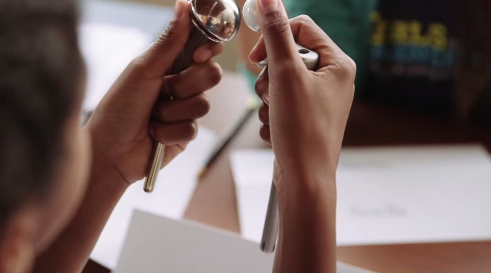

How Do I Apply?
SUCCESS is a research study and collaboration with Mathematics, Engineering, Science Achievement (MESA) and First Graduate. The SUCCESS Application is open from March 1 to April 1 each year. The application deadline for SUCCESS has passed for the summer of 2015. Please check back in March of 2016.
Can my child/student/I attend multiple years in a row?
Yes, we believe that students need multiple years of engagement to be successful in STEM. Although we are not using a cohort model, an interested student is encouraged to apply again or consider the UC Berkeley CY-BEAR Program.